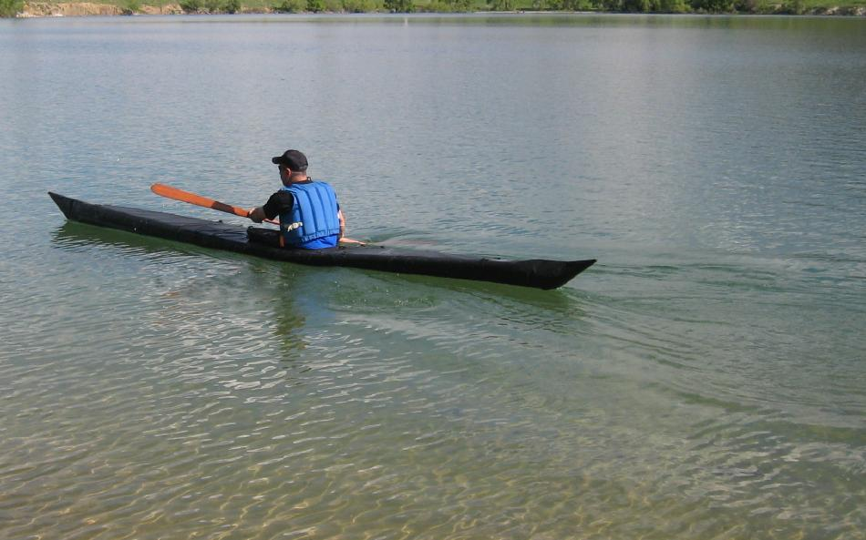

| Sonnet 18 - Inflatable / Folder Hybrid by Tom Yost (US) | Menu Previous Page Next Page |
|

Nat Ciano paddles the Sonnet 18 (17'10" X 23" X 25lbs.) Use the {Back} key to return.
It's an inflatable / folder hybrid as it's "frame" consists of 4
sponsons and 3 aluminum stringers. It has no seperate stand alone frame like a folding kayak as the sponsons are part of the skin and the stringers are inserted into the skin individually during assembly. The keel is 7/8" tubing tapering to 3/4" at the ends,
and the side stringers are 3/4" tube sections wedged between the two sponsons on each side. I hesitate to call these
chines due to their location. The three aluminum stringers
are free-standing as they do not connect at the stems ( bow / stern), though
they are held firmly in place when the sponsons are inflated.
There are no cross sections, just two cross-brace tubes that are hinged to the side
stringers and swing out to connect to the opposite stringer and the keel
via HDPE "snaps". One is located at the coaming back, and the other serves as
the footbrace. This setup keeps the tubes from springing out of place during assembly
and also contributes to overall rigidity.
Once the sponsons are inflated, the cross-braces can be folded back for loading gear and then reconnected. With no cross sections to limit access,
gear is easy to load and there is good storage space within. Commercial "Folbot" ( 15' X 3.5") sponsons are used to insure reliability in this critical area.
Assembly is done inside of the skin, with no zippers or flaps required. The coaming is permanently attached, but a removable coaming is an option.
All stringer tubes are center connected with an oversized sleeve. Assembly is consistently less than 10 minutes, with disassembly less than 5 minutes. The hull skin is 18oz PVC, the deck 10oz PVC as are the sponson sleeves.
The advantages of an inflatable / folder vs a folding kayak are it's quicker assembly, and lighter weight.
In 15 to 20 mph winds on a small lake, the boat feels solid in the water, with good tracking, quick turning, and excellent stability. It has very little tendency to weathercock. I've averaged 4.4mph for an hour with a top speed of 6.0mph on a several lap course. The effort was moderate , not hard. In addition, I tested the boat seperately with 1 top sponson deflated, 1 bottom sponsoon deflated, both top sponsons deflated, and both bottom sponons deflated and in all 4 conditions the boat was stable with good tracking and turning. Additional pics and details can be found on the next page.
|
|